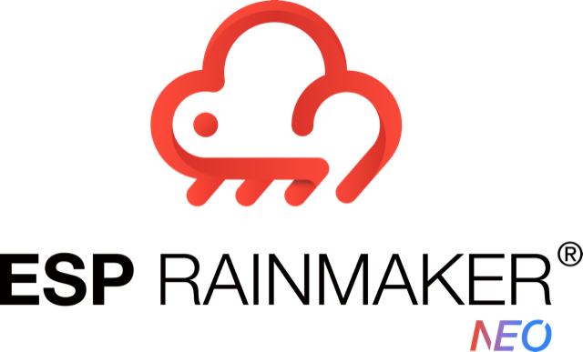

HTTP
RainMaker User API
REST endpoints for users and admins
RainMaker User Identity API
Login and identity management endpoints
MQTT
RainMaker Node MQTT
Topics and payloads used by nodes
RainMaker User MQTT
Topics and payloads for phone and web clients
Events
RainMaker Events
Push notification and webhook event payloads